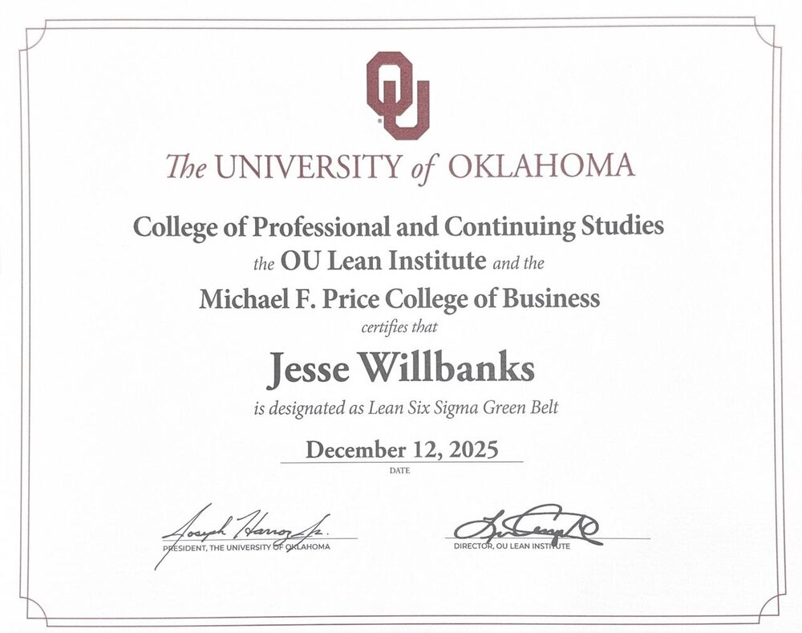
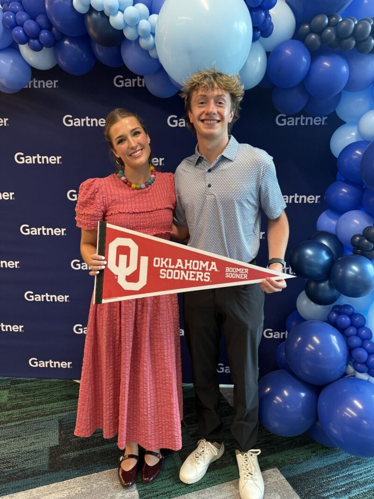
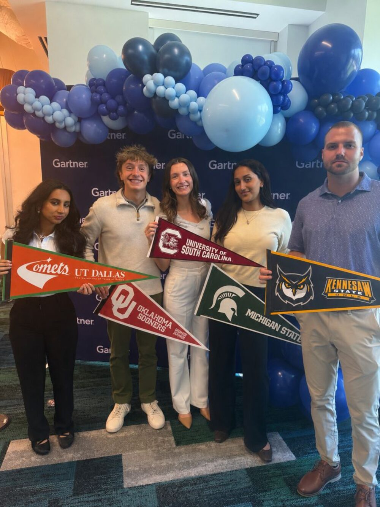
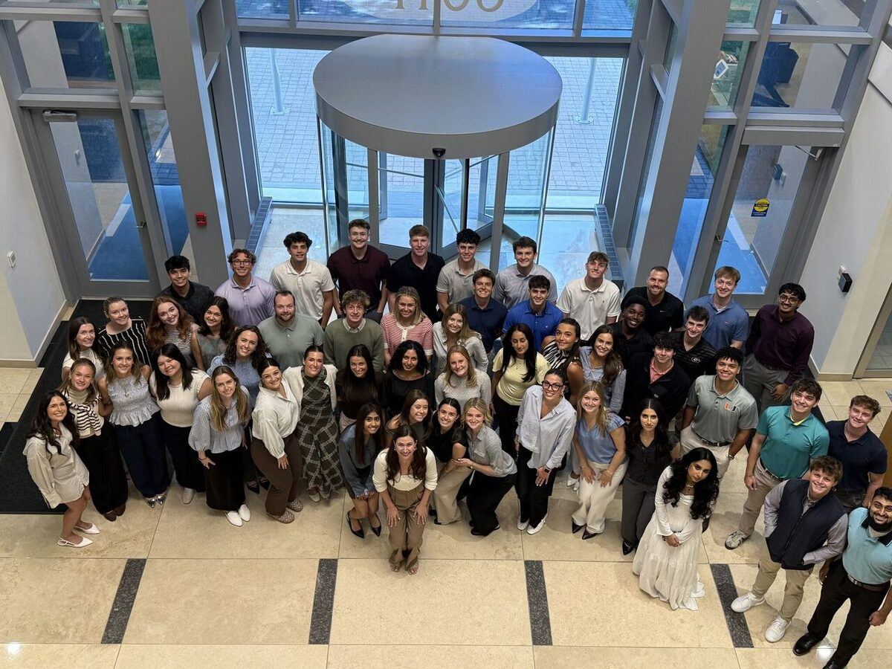
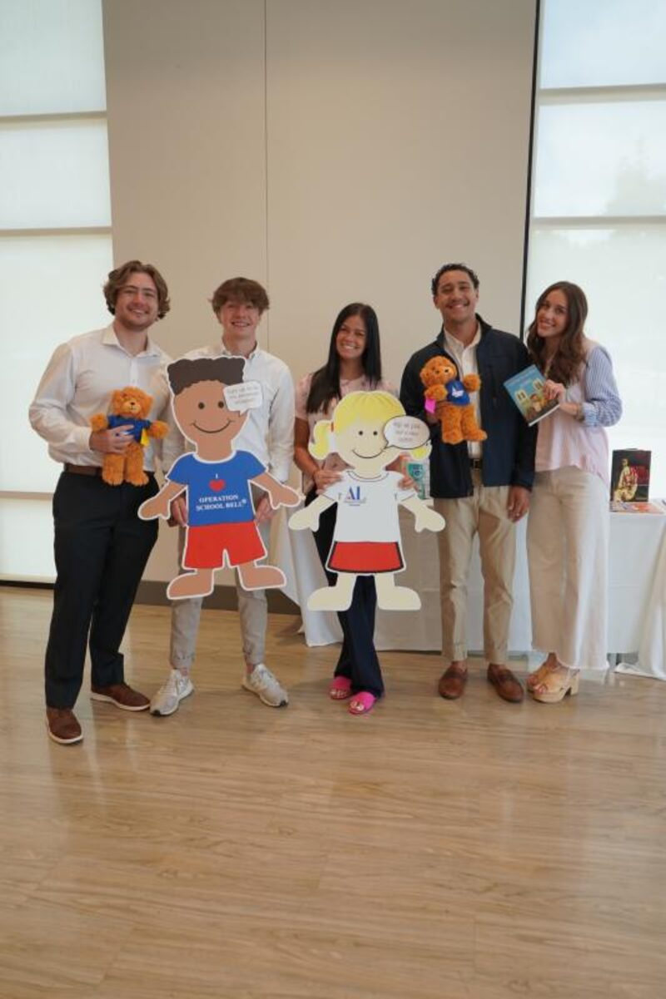
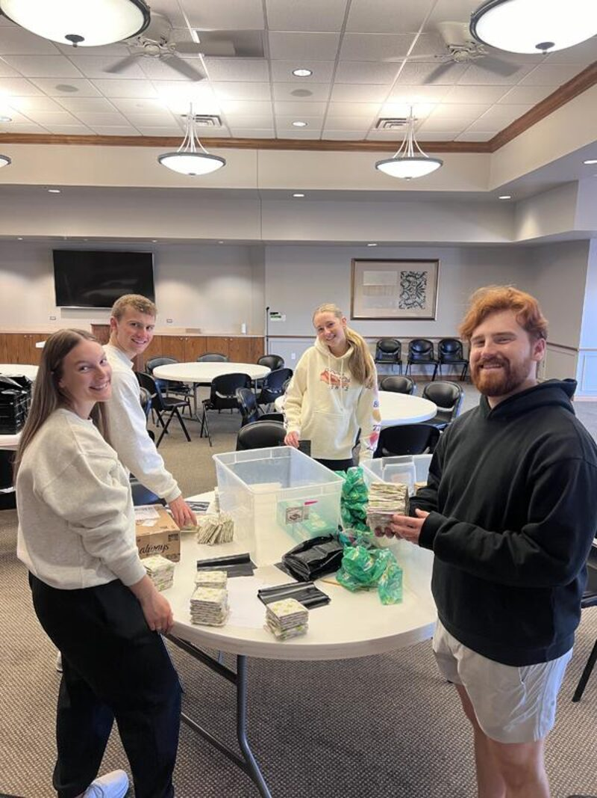
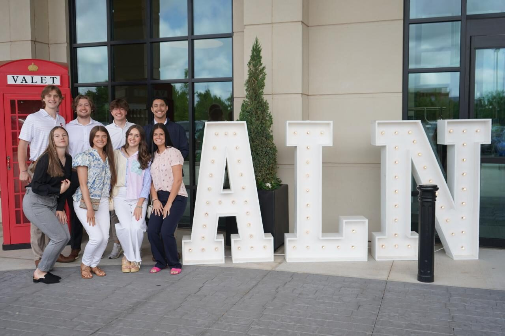

Experience & Education
Sales, healthcare operations, and leadership roles, most recent first, plus the degrees and certifications behind them.
University of Oklahoma
M.S., Management of Information Technology
BBA, Management Information Systems & Healthcare Business
GPA 3.60. Activities: Sigma Nu, Interfraternity Council, University Sing, Healthcare Business Club.
Certifications

Lean Six Sigma Green Belt
AWS Certified AI Practitioner
Relevant coursework
Business Data Analysis, Database Management Systems, Analytics Programming (R and Python), Business Intelligence and Data Warehousing, Cybersecurity and Infrastructure, Information Security, AI in Business.
Healthcare Finance, Healthcare Marketing and Administration, Comparative and Economic Environment of Healthcare, Healthcare Supply Chain Management, Lean Six Sigma in Healthcare.
Integrated Business Core, Business Finance, Managerial Accounting, Marketing, Management, Strategic Communication, Legal Environment of Business, Business Strategy and Policy capstone.
Work experience
Internships in technology sales, insurance, and hospital operations, alongside part-time work through school.
-
Business Development Coordinator Intern
Gartner- Supported the Global Technology Sales team in the banking, financial services, and insurance vertical
- Researched target accounts and ran outreach to C-suite technology executives
- Finished the internship at 126% of performance metrics



-
Patient Transport Intern
Crothall Healthcare at OU Health- Coordinated safe, efficient patient transport across hospital units under infection control and safety protocols
- Analyzed patient throughput times, dispatch volumes, and response rates to find process improvements
- Helped schedule, train, and coordinate frontline transport associates
- Worked with leadership to streamline dispatch communication and reduce transport delays
- Built status reports and presentations on performance trends for leadership decisions
-
Sales Intern
Gallagher- Supported client acquisition and business development, and researched markets for tailored insurance solutions
- Shadowed producers in client meetings to learn the insurance lifecycle, risk management, and coverage analysis
-
Fulfillment Specialist
Target- Processed and verified high-volume online orders for accuracy
- Coordinated shipping and delivery with logistics, customer service, and inventory teams
Leadership
Roles where I organized people around a goal, usually raising money or service hours for local nonprofits.
-
Vice President of Philanthropy
Interfraternity Council, University of Oklahoma- Organized fundraising and volunteer events for a Greek community of more than 6,000 members
- Planned a day of Greek Service Week, including volunteering at LoveWorks and benefit nights at Campus Corner restaurants
-
Chief Philanthropy Officer
Stadium Stacks, Integrated Business Core- Held a C-suite role in a student-run company that earned about $25,000 in revenue and $10,629 in net income
- Led 14 volunteers to 315 service hours with the Assistance League of Norman, beating a 300-hour goal
- Directed $7,814.63 of company profit to The Virtue Center


